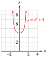
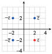

Subsection Imaginary Numbers
Although square roots of negative numbers such as \(\sqrt{-4}\) are not real numbers, they occur often in mathematics and its applications.
Mathematicians began working with square roots of negative numbers in the sixteenth century, in their attempts to solve quadratic and cubic equations. Ren Descartes gave them the name imaginary numbers, which reflected the mistrust with which mathematicians regarded them at the time. Today, however, such numbers are well understood and used routinely by scientists and engineers.
We begin by defining a new number, \(i\text{,}\) whose square is \(-1\text{.}\)
Imaginary Unit.
We define the imaginary unit \(i\) by
\begin{equation*}
i^2=-1 ~~~\text{ or }~~~ i=\sqrt{-1}
\end{equation*}
Checkpoint 7.40. QuickCheck 1.
The square root of any negative number can be written as the product of a real number and \(i\text{.}\) For example,
\begin{align*}
\sqrt{-4}\amp=\sqrt{-1\cdot 4}\\
\amp= \sqrt{-1}\sqrt{4}=i\cdot2
\end{align*}
or \(\sqrt{-4}=2i\text{.}\) Any number that is the product of \(i\) and a real number is called an imaginary number.
Imaginary Numbers.
For \(a\gt 0\text{,}\)
\begin{equation*}
\sqrt{-a}=\sqrt{-1}\cdot\sqrt{a}=i\sqrt{a}
\end{equation*}
Here are some xamples of imaginary numbers.
\begin{equation*}
3i\text{, }~~~\frac{7}{8}i\text{, } ~~~-38i\text{, }~~~\text{ and }~~~ i\sqrt{5}
\end{equation*}
Example 7.41.
Write each radical as an imaginary number.
\(\displaystyle \sqrt{-25}\)
\(\displaystyle 2\sqrt{-3}\)
Solution.
\(\displaystyle \begin{aligned}[t]\\
\sqrt{-25}\amp=\sqrt{-1}\sqrt{25}\\
\amp=i\sqrt{25}=5i
\end{aligned}\)
\(\displaystyle \begin{aligned}[t]\\
2\sqrt{-3}\amp=2\sqrt{-1}\sqrt{3}\\
\amp=2i\sqrt{3}
\end{aligned}\)
Checkpoint 7.42. Practice 2.
Subsection Complex Numbers
Consider the quadratic equation
\begin{equation*}
x^2 - 2x + 5 = 0
\end{equation*}
Using the quadratic formula to solve the equation, we find
\begin{equation*}
x=\frac{-(-2)\pm\sqrt{(-2)^2-4(1)(5)}}{2}=\frac{2\pm\sqrt{-16}}{2}
\end{equation*}
If we now replace \(\sqrt{-16}\) with \(4i\text{,}\) we have
\begin{equation*}
x=\frac{2\pm4i}{2}=1\pm2i
\end{equation*}
The two solutions are \(1 + 2i\) and \(1 - 2i\text{.}\) These numbers are examples of complex numbers.
Complex Numbers.
A complex number can be written in the form \(a+bi\text{,}\) where \(a\) and \(b\) are real numbers.
Here are some examples of complex numbers.
\begin{equation*}
3-5i\text{, }~~~2+\sqrt{7}i\text{, }~~~\frac{4-i}{3}\text{, }~~~6i\text{, }~~~\text{ and } -9
\end{equation*}
In a complex number \(a+bi\text{,}\) \(a\) is called the real part, and \(b\) is called the imaginary part. All real numbers are also complex numbers (with the imaginary part equal to zero). A complex number whose real part equals zero is called a pure imaginary number.
Example 7.44.
Write the solutions to
Example7.37,
\(\dfrac{2\pm\sqrt{-4}}{2}\text{,}\) as complex numbers.
Solution.
Because \(\sqrt{-4}=\sqrt{-1}\sqrt{4}=2i\text{,}\) we have \(\dfrac{2\pm\sqrt{-4}}{2}=\dfrac{2\pm2i}{2}\text{,}\) or \(1\pm i\text{.}\) The solutions are \(1+i\) and \(1-i\text{.}\)
Checkpoint 7.45. Practice 3.
Subsection Products of Complex Numbers
To find the product of two imaginary numbers, we use the fact that \(i^2=-1\text{.}\) For example,
\begin{align*}
(3i )\cdot(4i ) \amp= 3\cdot4 i^2\\
\amp= 12(-1) = -12
\end{align*}
To find the product of two complex numbers, we use the FOIL method, as if the numbers were binomials. For example,
\begin{equation*}
(2 + 3i )(3 - 5i ) = 6 - 10i + 9i - 15i^2
\end{equation*}
Because \(i^2=-1\text{,}\) the last term, \(-15i^2\text{,}\) can be replaced by \(-15(-1)\text{,}\) or \(15\text{,}\) to obtain
\begin{equation*}
6 - 10i + 9i + 15
\end{equation*}
Finally, we combine the real parts and imaginary parts to obtain
\begin{equation*}
(6 + 15) + (-10i + 9i ) = 21 - i
\end{equation*}
Example 7.49.
Multiply \((7 - 4i )(-2 - i )\text{.}\)
Solution.
\begin{align*}
(7 - 4i )(-2 - i ) \amp= -14 - 7i + 8i + 4i^2\amp\amp \blert{\text{Replace }i^2 \text{ by }-1.}\\
\amp = -14 - 7i + 8i - 4\amp\amp \blert{\text{Combine real parts and imaginary}}\\
\amp= -18 + i\amp\amp \blert{\text{imaginary parts.}}
\end{align*}
Checkpoint 7.50. Practice 5.
You can verify that in general the following rule holds.
Product of Complex Numbers.
\begin{equation*}
(a + bi)(c + di) = (ac - bd) + (ad + bc)i
\end{equation*}
Checkpoint 7.52. Pause and Reflect.
Subsection Quotients of Complex Numbers
To find the quotient of two complex numbers, we use the technique of rationalizing the denominator. (See Algebra Skills Refresher
SectionA.10.)
For example, consider the quotient
\begin{equation*}
\frac{3+4i}{2i}
\end{equation*}
Because \(i\) is really a radical (remember that \(i =\sqrt{-1})\text{,}\) we multiply the numerator and denominator of the quotient by \(\alert{i}\) to obtain
\begin{align*}
\frac{(3+4i)\cdot \alert{i}}{2i\cdot\alert{i}}\amp =\frac{3i+4i^2}{2i^2} \amp\amp \blert{\text{Apply the distributive law to the numerator.}}\\
\amp=\frac{3i-4}{-2}\amp\amp \blert{\text{Recall that }i^2=-1.}
\end{align*}
To write the quotient in the form \(a + bi\text{,}\) we divide \(-2\) into each term of the numerator to get
\begin{equation*}
\frac{3i}{-2}-\frac{4}{-2}=\frac{-3}{2}i+2=2+\frac{-3}{2}i
\end{equation*}
Example 7.53.
Divide \(~~\displaystyle{\frac{10-15i}{5i}}\)
Solution.
We multiply numerator and denominator by \(\alert{i}\text{.}\)
\begin{align*}
\frac{10-15i}{5i}\amp=\frac{(10-15i)\cdot \alert{i}}{5i\cdot \alert{i}}\amp\amp\\
\amp=\frac{10i-15i^2}{5i^2}\amp\amp \blert{\text{Replace }i^2 \text{ by } -1.}\\
\amp=\frac{10i+15}{-5}\amp\amp\\
\amp=\frac{10i}{-5}+\frac{15}{-5}\amp\amp \blert{\text{Divide }-5 \text{ into each term of numerator.}} \\
\amp=-2i-3
\end{align*}
The quotient is \(-3 - 2i\text{.}\)
Checkpoint 7.54. Practice 6.
If \(z = a + bi\) is any nonzero complex number, then the number \(\overline{z} = a - bi\) is called the complex conjugate of \(z\text{.}\) The product of a nonzero complex number and its conjugate is always a positive real number.
\begin{equation*}
z\overline{z} = (a + bi)(a - bi) = a^2 - b^2i^2 = a^2 - b^2(-1) = a^2 + b^2
\end{equation*}
We use this fact to find the quotient of complex numbers. If the divisor has both a real and an imaginary part, we multiply numerator and denominator by the conjugate of the denominator.
Checkpoint 7.55. QuickCheck 3.
Example 7.56.
Divide \(~~\displaystyle{\frac{2+3i}{4-2i}}\)
Solution.
We multiply numerator and denominator by \(\alert{4 + 2i}\text{,}\) the conjugate of the denominator.
\begin{align*}
\frac{2+3i}{4-2i}\amp=\frac{(2+3i)(\alert{4 + 2i})}{(4-2i)(\alert{4 + 2i})} \amp\amp \blert{\text{Expand numerator and denominator.}}\\
\amp=\frac{8 + 4i + 12i + 6i^2}{16 + 8i - 8i - 4i^2} \amp\amp \blert{\text{Replace }i^2\text{ by } -1.}\\
\amp= \frac{8 + 16i - 6}{16 - (-4)} \amp\amp \blert{\text{Combine like terms.}}\\
\amp= \frac{2 + 16i}{20} \amp\amp \blert{\text{Divide 20 into each term of numerator.}}\\
\amp= \frac{2}{20}+ \frac{16i}{20}\\
\amp= \frac{1}{10}+ \frac{4}{5}i
\end{align*}
Checkpoint 7.57. Practice 7.
Checkpoint 7.58. Pause and Reflect.
Subsection Zeros of Polynomials
Because we can add, subtract, and multiply any two complex numbers, we can use a complex number as an input for a polynomial function. Thus, we can extend the domain of any polynomial to include all complex numbers.
Example 7.59.
Evaluate the polynomial \(f(x) = x^2 - 2x + 2\) for \(x = 1 + i\text{,}\) then simplify.
Solution.
We substitute \(x = \alert{1 + i}\) to find
\begin{align*}
f(\alert{1 + i} ) \amp = (\alert{1 + i} )^2 - 2(\alert{1 + i} ) + 2\\
\amp = 1^2 + 2i + i^2 - 2 - 2i + 2\\
\amp = 1 + 2i + (-1) - 2 - 2i + 2\\
\amp =0
\end{align*}
Thus, \(f(1 + i ) = 0\text{,}\) so \(1 + i\) is a solution of \(x^2 - 2x + 2 = 0\text{.}\)
Checkpoint 7.60. Practice 8.
In
Chapter6, we learned that irrational solutions of quadratic equations occur in conjugate pairs,
\begin{equation*}
x=\frac{-b}{2a}+\frac{\sqrt{b^2-4ac}}{2a} ~~\text{ and }~~ x=\frac{-b}{2a}-\frac{\sqrt{b^2-4ac}}{2a}
\end{equation*}
If the discriminant \(D = b^2 - 4ac\) is negative, the two solutions are complex conjugates,
\begin{equation*}
z=\frac{-b}{2a}+\frac{i\sqrt{\abs{D}}}{2a} ~~\text{ and }~~ \overline{z}=\frac{-b}{2a}-\frac{i\sqrt{\abs{D}}}{2a}
\end{equation*}
Thus, if we know that \(z\) is a complex solution of a quadratic equation, we know that \(\overline{z}\) is the other solution. The quadratic equation with solutions \(z\) and \(\overline{z}\) is
\begin{align*}
(x - z)(x - \overline{z}) \amp = 0\\
x^2-(z+ \overline{z}) +z\overline{z}\amp = 0
\end{align*}
Example 7.61.
Let \(z = 7 - 5i\text{.}\) Compute \(z\overline{z}\text{.}\)
Find a quadratic equation with one solution being \(z = 7 - 5i\text{.}\)
Solution.
The conjugate of \(z = 7 - 5i\) is \(\overline{z} = 7 + 5i\text{,}\) so
\begin{align*}
z\overline{z} \amp= (7 - 5i )(7 + 5i )\\
\amp= 49 - 25i^2 \\
\amp= 49 + 25 \\
\amp= 74
\end{align*}
The other solution of the equation is \(\overline{z} = 7 + 5i\text{,}\) and the equation is \((x-z)(x-\overline{z}) = 0\text{.}\) We expand the product to find
\begin{align*}
(x - z)(x - \overline{z}) \amp = x^2 - (z + \overline{z})x + z\overline{z}\\
\amp = x^2 - (7 - 5i + 7 + 5i )x + 74\\
\amp = x^2 - 14x + 74
\end{align*}
The equation is \(x^2 - 14x + 74 = 0\text{.}\)
Checkpoint 7.62. Practice 9.
One of the most important results in mathematics is the fundamental theorem of algebra, which says that if we allow complex numbers as inputs, then every polynomial \(p(x)\) of degree \(n\ge 1\) has exactly \(n\) complex number zeros.
Fundamental Theorem of Algebra.
Let \(p(x)\) be a polynomial of degree \(n\ge 1\text{.}\) Then \(p(x)\) has exactly \(n\) complex zeros.
As a result, the factor theorem tells that every polynomial of degree \(n\) can be factored as the product of \(n\) linear terms. For example, although the graph of \(y = x^4 + 4\) shown at right has no \(x\)-intercepts, the fundamental theorem tells us that there are four complex solutions to \(x^4 + 4 = 0\text{,}\) and that \(x^4 + 4\) can be factored.

You can check that the four solutions to \(x^4 + 4 = 0\) are \(1 + i\text{,}\) \(-1 + i\text{,}\) \(-1 - i\) , and \(1 - i\text{.}\) For example, if \(x = 1 + i\text{,}\) then
\begin{equation*}
x^2 = (1 + i )^2 = 1 + 2i + i^2 = 2i
\end{equation*}
and
\begin{equation*}
x^4 = \left(x^2\right)^2 = (2i )^2 = -4,
\end{equation*}
so \(x^4+4=(-4)+4=0\text{.}\)
Because each zero corresponds to a factor of the polynomial, the factored form of \(x^4 + 4\) is
\begin{equation*}
x^4 + 4 = \left[x - (1 + i )\right]\left[x - (-1 + i )\right]\left[x - (-1 - i )\right]\left[x - (1 - i )\right]
\end{equation*}
Checkpoint 7.64. QuickCheck 4.
Example 7.65.
Find a fourth-degree polynomial with real coefficients, two of whose zeros are \(3i\) and \(2 + i\text{.}\)
Solution.
The other two zeros are \(-3i\) and \(2 - i\text{.}\) The factored form of the polynomial is
\begin{equation*}
(x - 3i )(x + 3i )[x - (2 + i )][x - (2 - i )]
\end{equation*}
We multiply together the factors to find the polynomial. The product of \((x - 3i )(x + 3i )\) is \(x^2 + 9\text{,}\) and
\begin{align*}
[x - (2 + i )][x - (2 - i )] \amp = x^2 - (2 + i + 2 - i )x + (2 + i )(2 - i )\\
\amp = x^2 - 4x + 5
\end{align*}
Finally, we multiply these two partial products to find the polynomial we seek,
\begin{equation*}
(x^2 + 9)(x^2 - 4x + 5) = x^4 - 4x^3 + 14x^2 - 36x + 45
\end{equation*}
Checkpoint 7.66. Practice 10.
Checkpoint 7.67. Pause and Reflect.
Subsection Graphing Complex Numbers
Real numbers can be plotted on a number line, but to graph a complex number we use a plane, called the complex plane. In the complex plane, the real numbers lie on the horizontal or real axis, and pure imaginary numbers lie on the vertical or imaginary axis.
To plot a complex number a + bi, we move \(a\) units from the origin in the horizontal direction and \(b\) units in the vertical direction. The numbers \(2 + 3i\) and \(2 - 3i\) are plotted at left.
Example 7.68.
Plot the numbers \(z\text{,}\) \(\overline{z}\text{,}\) \(-z\text{,}\) and \(-\overline{z}\) as points on the complex plane, for \(z = 2 - 2i\text{.}\)
Solution.
To plot \(z = 2 - 2i\text{,}\) we move from the origin \(2\) units to the right and \(2\) units down.
To plot \(\overline{z} = 2 + 2i\text{,}\) we move from the origin \(2\) units to the right and \(2\) units up.
To plot \(-z = -2 + 2i\text{,}\) we move from the origin \(2\) units to the left and \(2\) units up.
To plot \(-\overline{z} = -2 - 2i\text{,}\) we move from the origin \(2\) units to the left and \(2\) units down.
All four points are plotted at right.

Checkpoint 7.69. Practice 11.